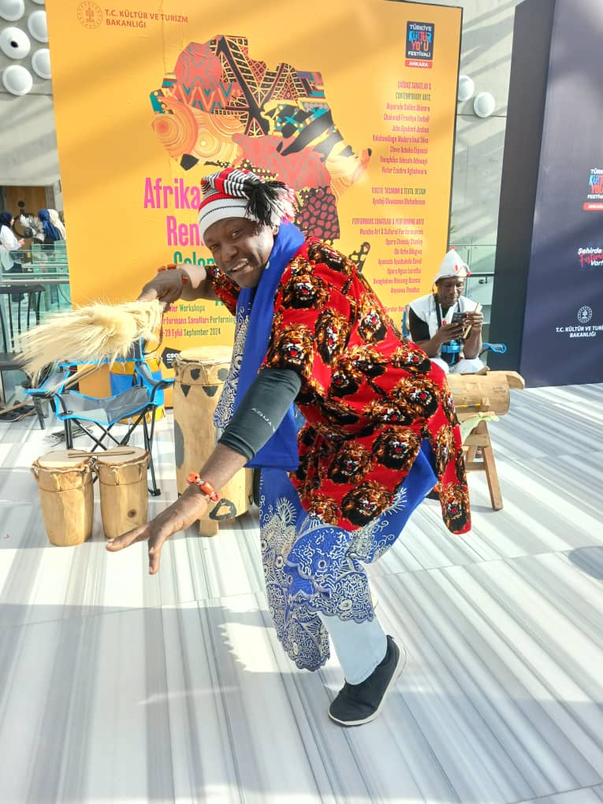

Celebrating Heritage
Honouring the traditions, stories, music, dance, and artistic expressions that connect us to our roots.
Our Heritage, Our Identity
Celebrating African creativity, preserving cultural heritage, and sharing the beauty of our traditions through the arts.
Meet Our FounderThe Person Behind the Vision
Meet the founder and artistic director behind WAZOBIA Arts and Cultural Performances.

Mr. Opara Stanley Chinedu is the Founder and Artistic Director of WAZOBIA Arts and Cultural Performances (WAC&P). He is the former Financial Secretary of the Dance Guild of Nigeria (Abuja Branch) and currently serves as Cultural Manager at Nike Centre for Arts and Culture.
He is also a member of the African Arts and Cultural Heritage Association (AACHAA).
He is a former professor of traditional dance and percussion at Ecole Française Marcel Pagnol of Abuja and a recipient of the Certificate of Cultural Awareness by the United States Embassy Mission.
Through his work in arts and culture, he contributes to celebrating and sharing the richness of cultural expression.
What Matters to Us
We celebrate culture as a living expression of identity, creativity, and community.
Honouring the traditions, stories, music, dance, and artistic expressions that connect us to our roots.
Creating opportunities for cultural expression through performance, artistic practice, and learning.
Sharing cultural experiences that bring people together and encourage appreciation of our differences.
Culture in Action
Cultural heritage continues to grow when it is practised, shared, taught, and experienced. WAZOBIA Arts and Cultural Performances celebrates this living connection between tradition and creativity.
Explore Our WorkshopsOUR COMPANY PROFILE
Wazobia Art and Cultural Performances (WACP) is a professional cultural and performing arts company based in Abuja, Nigeria. The organization was officially registered with the Corporate Affairs Commission (CAC) in 2009.
WACP was originally founded in 2002 in Lagos, Nigeria, under the name Small World Cultural Troupe. Over the years, the organization expanded its vision, structure, and artistic impact, leading to its rebranding as Wazobia Art and Cultural Performances.
Today, WACP stands as a creative hub where talent is discovered, nurtured, and professionally developed. We combine traditional African heritage with modern stage presentation to promote culture locally and internationally.
Our Areas of Specialization
WACP is committed to cultural preservation, youth empowerment, and social development. Our core objectives include:
Over the years, WACP has successfully delivered performances and cultural programs both in Nigeria and internationally.
Performance during the visit of former US President Bill Clinton to Nigeria
Performance at Nigeria @40 Celebration in the Netherlands (Netherlands Congress Hall)
Organized workshop, exhibition, and performance in Belgium during Nigerian Cultural Heritage Celebration at Wereld Culturen Centrum
Conducted traditional dance and percussion training at École Française Marcel Pagnol, Abuja
Performance at Dantata & Sawoe 30th Anniversary, National Stadium Abuja
Organized Batik and African drumming workshop in collaboration with Nike Art and Cultural Research Centre and the United States Embassy
Conducted Batik, tie and dye workshop and exhibition for the former Italian Ambassador's wife (in collaboration with Nike Art Centre)
Performance at Nigeria @50 Celebration organized by Salini Nigeria Ltd (Cultural Centre and Millennium Tower Abuja)
Performance at Nigeria Oil and Gas 10th Anniversary, Abuja
Annual performances at Nigeria Oil and Gas Awards Ceremony, Abuja
Performance at Green World Awards Night, Abuja
Scripted, directed, and performed dance drama for Hope of Africa Reality Show, Abuja
WACP continues to represent Nigerian culture on prestigious local and international platforms.
Performance for the Vice President of South Korea at Nike Art Gallery and South Korea National Day at Transcorp Hilton Abuja
Performance for the Chinese Ambassador at Nike Art Gallery
Performance at Institut Français during JAPA Dance Drama debut
Performance at Colors of Africa Festival, CSO Centre, Ankara, Turkey
October — Performance for the Turkish Ambassador at Turkish National Day Celebration
Performance for the French Embassy (JAPA Dance Drama)
June — Performance for First Ladies of African Nations and the First Lady of Nigeria
June — Performance at Pakistan Embassy, Abuja
June — Performance for Former Minister of Information Lai Mohammed and Minister of Art, Culture & Tourism Hannatu Musa Musawa
July — Performance at Aso Rock Presidential Villa
August — Performance for the Vice President of Colombia
September — Performance for National Counter Terrorism Centre (The Presidency)
Second appearance at Colors of Africa Festival, Ankara, Turkey
September — Performance at New Yam Festival, Transcorp Abuja
November — Performance at Afrimax Cultural Infusion
December — Performance at Groovy December Festival (15–17 December)
To become a leading African cultural organization that promotes heritage, creativity, and social impact through world-class artistic performances and training programs.